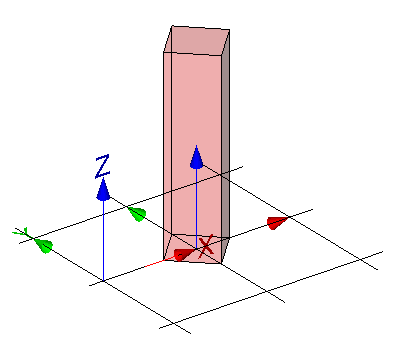

Annex E
(informative)
Examples
E.6.2 - Mapped Shape With Transformation
Example overview
The example demonstrates the use of various way to use mapped items to represent a simple geometric form of a building element proxy. All example files use the same representation map being a swept solid defining the shape (a block of 1m x 1m x 2m).
The basic structure provided with the sample IFC files include:
- the basic context of the data set provided by IfcProject and referenced entities:
- IfcOwnerHistory for user, application and time stamp where the project data set had been created;
- IfcGeometricRepresentationContext for the general context, including representation type, dimension, coordinate system, and precision;
- IfcUnitAssignment for the default units used within the data set,
- the basic spatial structure of the project provided by a single IfcBuilding with referenced entities:
- IfcLocalPlacement to create the local object coordinate system of the building being the parant coordinate system for all objects contained within the building;
- IfcRelAggregates to link the IfcBuilding to the IfcProject as the uppermost item of the project spatial structure,
- the proxy element having a shape representation provided by a single IfcBuildingElementProxy with referenced entities:
- IfcLocalPlacement to create the local object coordinate system of the proxy relative to the object coordinate system of the building;
- IfcProductDefinitionShape to define the geometry within the local object coordinate system.
Depending on the model view definition some representation types may not be allowed in actual exchange scenarios.
The mapped representation can be generated by a mapped item placing a mapped representation with a Cartesian transformation.

The representation map, being a simple block, is inserted as a mapped item for the building element proxy within its local object coordinate system. It is transformed by a rotation by 45' in xy plane and by a non-uniform scaling with x-scale=0.5, y-scale=0.5 and z-scale=1.0. See Figure E.A.
IFC-SPF source
ISO-10303-21;
HEADER;
/* NOTE a valid model view name has to be asserted, replacing 'notYetAssigned' ----------------- */
FILE_DESCRIPTION(
( 'ViewDefinition [notYetAssigned]'
,'Comment [manual creation of example file]'
)
,'2;1');
/* NOTE standard header information according to ISO 10303-21 ---------------------------------- */
FILE_NAME(
'mapped-shape-with-transformation.ifc',
'2011-11-07T18:00:00',
('redacted'),
('redacted'),
'redacted',
'redacted',
'reference file created for the IFC4 specification');
FILE_SCHEMA(('IFC4X3_ADD2'));
ENDSEC;
DATA;
/* --------------------------------------------------------------------------------------------- */
/* general entities required for all IFC data sets, defining the context for the exchange ------ */
#100= IFCPROJECT('0xScRe4drECQ4DMSqUjd6d',#110,'proxy with transformed mapped representation',$,$,$,$,(#201),#301);
/* single owner history sufficient if not otherwise required by the view definition ------------ */
/* provides the person and application creating the data set, and the time it is created ------- */
#110= IFCOWNERHISTORY(#111,#115,$,.ADDED.,1320688800,$,$,1320688800);
#111= IFCPERSONANDORGANIZATION(#112,#113,$);
#112= IFCPERSON($,'redacted','redacted',$,$,$,$,$);
#113= IFCORGANIZATION($,'redacted',$,$,$);
#115= IFCAPPLICATION(#113,'redacted','redacted','redacted');
/* each IFC data set containing geometry has to define a geometric representation context ------ */
/* the attribute 'ContextType' has to be 'Model' for 3D model geometry ------------------------- */
#201= IFCGEOMETRICREPRESENTATIONCONTEXT($,'Model',3,1.0E-5,#210,$);
/* the attribute 'ContextIdentifier' has to be 'Body' for the main 3D shape representation ----- */
#202= IFCGEOMETRICREPRESENTATIONSUBCONTEXT('Body','Model',*,*,*,*,#201,$,.MODEL_VIEW.,$);
#210= IFCAXIS2PLACEMENT3D(#901,$,$);
/* each IFC data set containing geometry has to define at absolute minimum length and angle ---- */
/* here length is milli metre as SI unit, and plane angle is 'degree' as non SI unit ----------- */
#301= IFCUNITASSIGNMENT((#311,#312));
#311= IFCSIUNIT(*,.LENGTHUNIT.,.MILLI.,.METRE.);
#312= IFCCONVERSIONBASEDUNIT(#313,.PLANEANGLEUNIT.,'degree',#314);
#313= IFCDIMENSIONALEXPONENTS(0,0,0,0,0,0,0);
#314= IFCMEASUREWITHUNIT(IFCPLANEANGLEMEASURE(0.017453293),#315);
#315= IFCSIUNIT(*,.PLANEANGLEUNIT.,$,.RADIAN.);
/* each IFC data set containing elements in a building context has to include a building ------- */
/* at absolute minimum (could have a site and stories as well) --------------------------------- */
#500= IFCBUILDING('2FCZDorxHDT8NI01kdXi8P',$,'Test Building',$,$,#511,$,$,.ELEMENT.,$,$,$);
/* if the building is the uppermost spatial structure element it defines the absolut position -- */
#511= IFCLOCALPLACEMENT($,#512);
/* no rotation - z and x axes set to '$' are therefore identical to "world coordinate system" -- */
#512= IFCAXIS2PLACEMENT3D(#901,$,$);
/* if the building is the uppermost spatial structure element it is assigned to the project ---- */
#519= IFCRELAGGREGATES('2YBqaV_8L15eWJ9DA1sGmT',$,$,$,#100,(#500));
/* shared coordinates - it is permissable to share common instances to reduce file size -------- */
#901= IFCCARTESIANPOINT((0.,0.,0.));
#902= IFCDIRECTION((1.,0.,0.));
#903= IFCDIRECTION((0.,1.,0.));
#904= IFCDIRECTION((0.,0.,1.));
#905= IFCDIRECTION((-1.,0.,0.));
#906= IFCDIRECTION((0.,-1.,0.));
#907= IFCDIRECTION((0.,0.,-1.));
/* --------------------------------------------------------------------------------------------- */
/* proxy element with mapped representation, assigned to the building -------------------------- */
/* --------------------------------------------------------------------------------------------- */
#1000= IFCBUILDINGELEMENTPROXY('1kTvXnbbzCWw8lcMd1dR4o',$,'P-1','sample proxy',$,#1001,#1010,$,$);
/* proxy element placement relative to the building -------------------------------------------- */
#1001= IFCLOCALPLACEMENT(#511,#1002);
/* set local placement to 1 meter on x-axis, and 0 on y, and 0 on z axes ----------------------- */
/* no rotation - z and x axes set to '$' are therefore identical to those of building ---------- */
#1002= IFCAXIS2PLACEMENT3D(#1003,$,$);
#1003= IFCCARTESIANPOINT((1000.,0.,0.));
/* proxy element shape representation ---------------------------------------------------------- */
#1010= IFCPRODUCTDEFINITIONSHAPE($,$,(#1020));
/* a single shape representation of type 'MappedRepresentation' is included -------------------- */
#1020= IFCSHAPEREPRESENTATION(#202,'Body','MappedRepresentation',(#1021));
#1021= IFCMAPPEDITEM(#5010,#1022);
/* Cartesian transformation of the mapped item ------------------------------------------------- */
/* with rotation by 45' in xy plane and non uniform scaling: x=0.5, y=0.5, z=1.0 --------------- */
#1022= IFCCARTESIANTRANSFORMATIONOPERATOR3DNONUNIFORM(#1023,#1024,#901,0.5,#904,0.5,1.);
#1023= IFCDIRECTION((1.,1.,0.));
#1024= IFCDIRECTION((-1.,1.,0.));
/* --------------------------------------------------------------------------------------------- */
/* proxy element type with swept solid shape representation ------------------------------------ */
/* --------------------------------------------------------------------------------------------- */
#5000= IFCBUILDINGELEMENTPROXYTYPE('241tWGhBr3rvJJzQGOOY_x',$,'Type-P',$,$,$,(#5010),$,$,.NOTDEFINED.);
#5010= IFCREPRESENTATIONMAP(#5011,#5100);
#5011= IFCAXIS2PLACEMENT3D(#901,$,$);
#5100= IFCSHAPEREPRESENTATION(#202,'Body','SweptSolid',(#5021));
/* based on a profile (or cross section) of 1m by 1m being extruded by 2m ---------------------- */
#5021= IFCEXTRUDEDAREASOLID(#5022,$,#904,2000.);
#5022= IFCRECTANGLEPROFILEDEF(.AREA.,'1m x 1m rectangle',$,1000.,1000.);
/* extrusion body is placed centric with no rotation inside the object coordinate placement ---- */
/* extrusion position z = default = (0.,0.,1.), x = default = (1.,0.,0.) ----------------------- */
/* since IFC4 this is the default, therefore the Position can be nil --------------------------- */
/* proxy element assigned to the building ------------------------------------------------------ */
#10000=IFCRELCONTAINEDINSPATIALSTRUCTURE('2TnxZkTXT08eDuMuhUUFNy',$,'Physical model',$,(#1000),#500);
/* proxy type - assignment to proxy occurrence ------------------------------------------------- */
#10100= IFCRELDEFINESBYTYPE('0DR6_plxf08eQ9Y0V0n$sV',$,$,$,(#1000),#5000);
/* proxy type - declared within the project ---------------------------------------------------- */
#10200= IFCRELDECLARES ('1J7MBi$pT9ogxwD7fkPsrp',$,$,$,#100,(#5000));
ENDSEC;
END-ISO-10303-21;